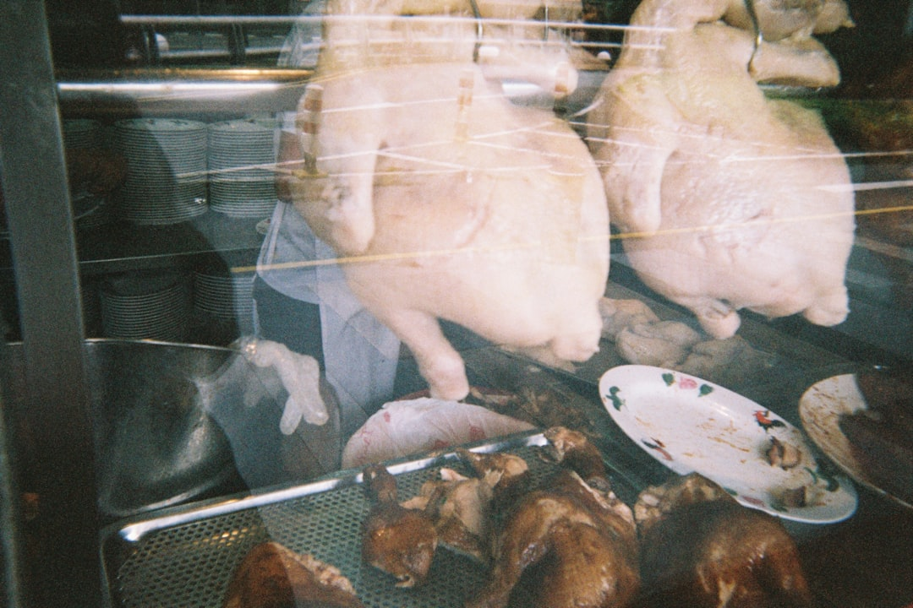
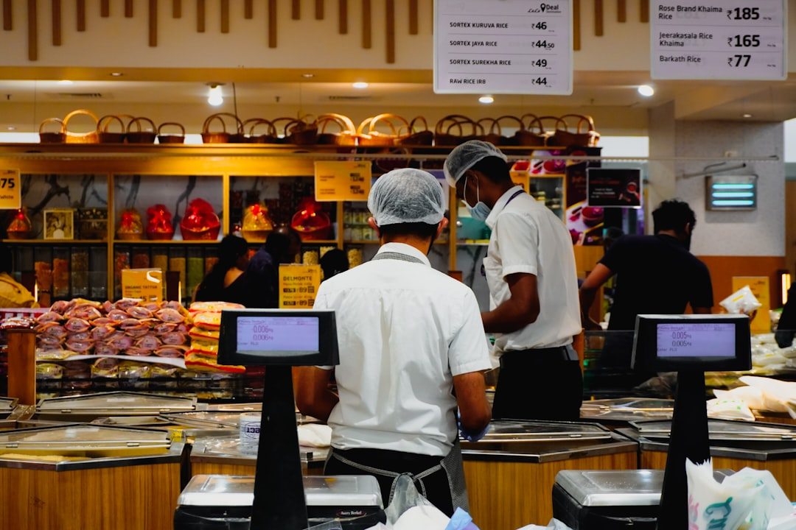
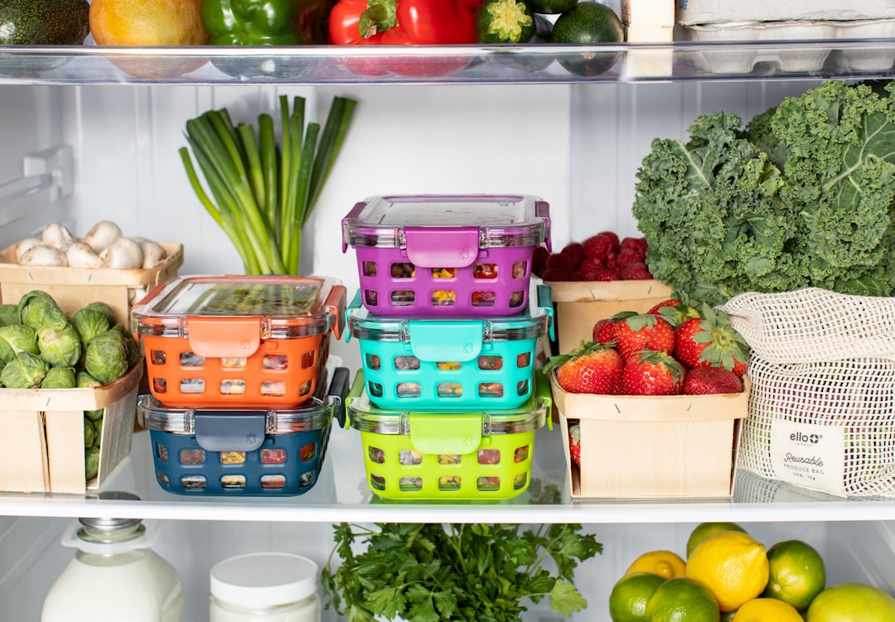
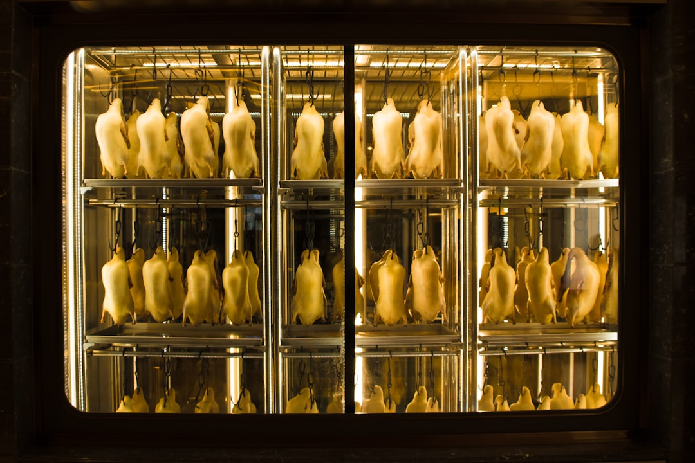
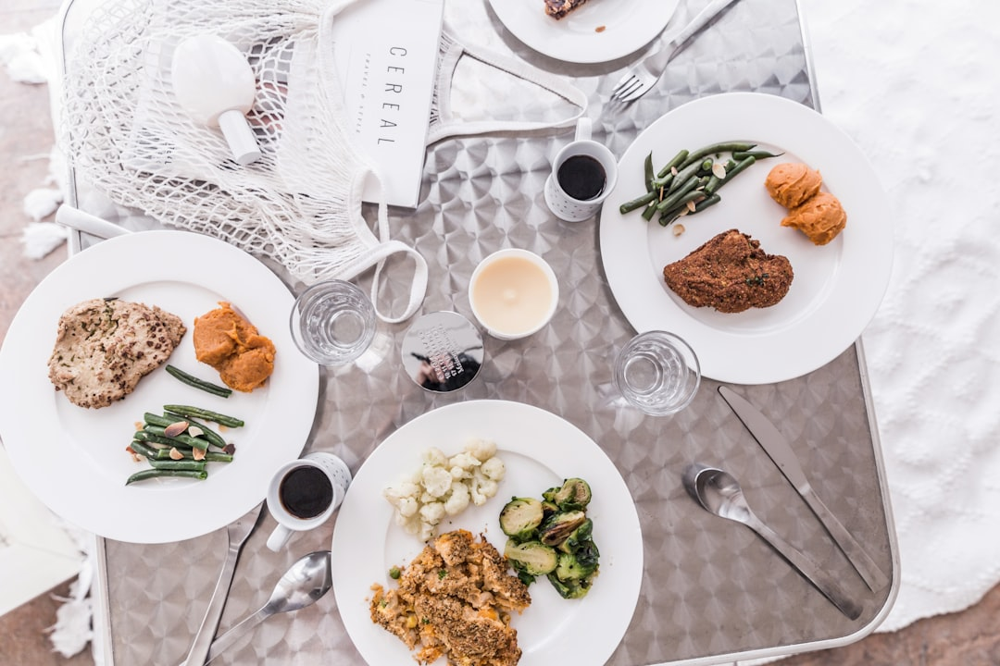
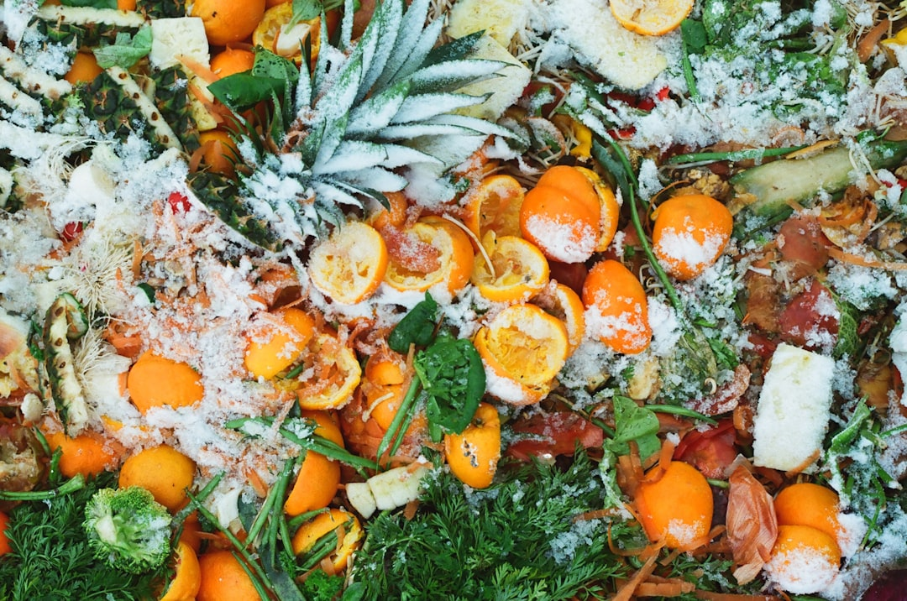
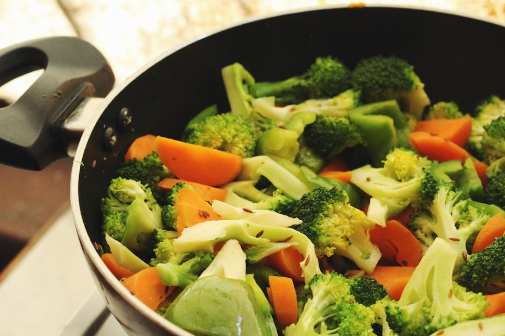
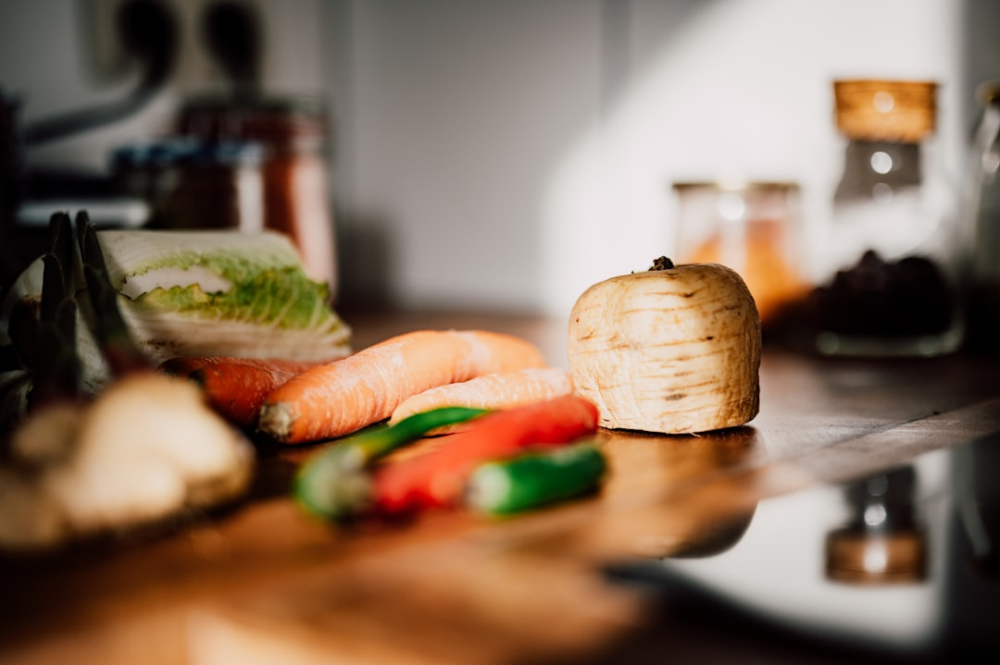

How to Tell if Cooked Chicken is Still Good to Eat
Keep your cooked chicken fresh and safe with these smart storage tips and spoilage signs. Say goodbye to fuzzy leftovers!

Save Money and Food: Beat Rising Grocery Prices with Ease
Discover practical tips to reduce food waste and save money as grocery prices soar. No more forgotten veggies!

Turn Fresh Food Habits into a Daily Routine
Learn how creating daily habits around food freshness can save money, reduce waste, and enhance your family's health.

How Long Does Raw Chicken Last in the Fridge?
Raw chicken can last in the fridge for 1-2 days, according to the USDA. Proper storage is key to keeping it safe and fresh.
Unlock Your Freezer’s Potential: Reduce Waste and Elevate Your Kitchen Skills
Discover the art of freezing food smartly and efficiently, turning your freezer into a culinary powerhouse that cuts down on waste and saves you money.

Meal Planning Made Easy: Simplifying Your Week Without the Spreadsheet Stress
Tired of complicated meal plans and wasted food? Discover simple steps to meal planning that will calm your kitchen chaos and cut down on waste!

Small Wins: How Tiny Habits Save Big on Food Waste
Learn how small habits can lead to big savings on food waste! Discover practical tips on tracking food expiration dates with Foil.

Wilting Veggies? You've Got Options — Quick Rescue Recipes Before They Cross to the Other Side
Rescue your wilting veggies from the brink of extinction with these quick and easy recipes. Cut down on food waste while enjoying delicious meals!
Leftover Legends: How Long Your Fridge Favorites Actually Last
Unlock the secrets of food shelf life and make your leftovers last longer with practical tips and the help of Foil.

10 Simple Ways to Reduce Food Waste at Home
Practical tips to cut down on food waste, save money, and make your kitchen more sustainable.